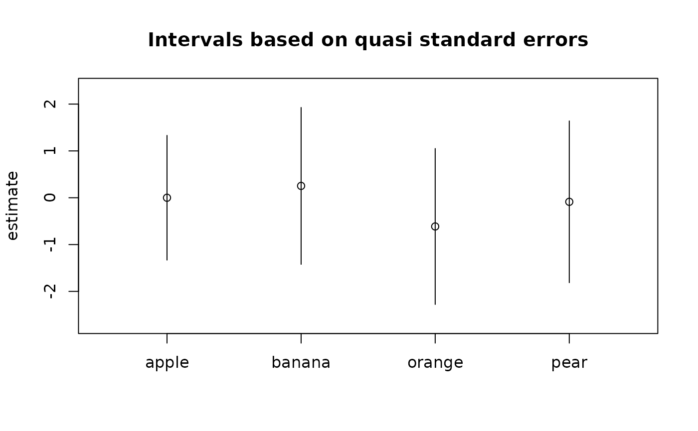

A method for qvcalc to compute a set of quasi variances (and
corresponding quasi standard errors) for estimated item parameters from a
Plackett-Luce model.
Usage
# S3 method for PlackettLuce
qvcalc(object, ref = 1L, ...)Arguments
- object
a
"PlackettLuce"object as returned byPlackettLuce.- ref
An integer or character string specifying the reference item (for which log worth will be set to zero). If
NULLthe sum of the log worth parameters is set to zero.- ...
additional arguments, currently ignored..
Value
A list of class "qv", with components
- covmat
The full variance-covariance matrix for the item parameters.
- qvframe
A data frame with variables
estimate,SE,quasiSEandquasiVar, the last two being a quasi standard error and quasi-variance for each parameter.- dispersion
NULL(dispersion is fixed to 1).- relerrs
Relative errors for approximating the standard errors of all simple contrasts.
- factorname
NULL(not required for this method).- coef.indices
NULL(not required for this method).- modelcall
The call to
PlackettLuceto fit the model from which the item parameters were estimated.
Details
For details of the method see Firth (2000), Firth (2003) or Firth and de Menezes (2004). Quasi variances generalize and improve the accuracy of “floating absolute risk” (Easton et al., 1991). This device for economical model summary was first suggested by Ridout (1989).
Ordinarily the quasi variances are positive and so their square roots (the quasi standard errors) exist and can be used in plots, etc.
References
Easton, D. F, Peto, J. and Babiker, A. G. A. G. (1991) Floating absolute risk: an alternative to relative risk in survival and case-control analysis avoiding an arbitrary reference group. Statistics in Medicine 10, 1025--1035.
Firth, D. (2000) Quasi-variances in Xlisp-Stat and on the web. Journal of Statistical Software 5.4, 1--13. At https://www.jstatsoft.org
Firth, D. (2003) Overcoming the reference category problem in the presentation of statistical models. Sociological Methodology 33, 1--18.
Firth, D. and de Menezes, R. X. (2004) Quasi-variances. Biometrika 91, 65--80.
Menezes, R. X. de (1999) More useful standard errors for group and factor effects in generalized linear models. D.Phil. Thesis, Department of Statistics, University of Oxford.
Ridout, M.S. (1989). Summarizing the results of fitting generalized linear models to data from designed experiments. In: Statistical Modelling: Proceedings of GLIM89 and the 4th International Workshop on Statistical Modelling held in Trento, Italy, July 17--21, 1989 (A. Decarli et al., eds.), pp 262--269. New York: Springer.
Examples
# Six partial rankings of four objects, 1 is top rank, e.g
# first ranking: item 1, item 2
# second ranking: item 2, item 3, item 4, item 1
# third ranking: items 2, 3, 4 tie for first place, item 1 second
R <- matrix(c(1, 2, 0, 0,
4, 1, 2, 3,
2, 1, 1, 1,
1, 2, 3, 0,
2, 1, 1, 0,
1, 0, 3, 2), nrow = 6, byrow = TRUE)
colnames(R) <- c("apple", "banana", "orange", "pear")
mod <- PlackettLuce(R)
qv <- qvcalc(mod)
qv
#> estimate SE quasiSE quasiVar
#> apple 0.00000000 0.000000 0.6655053 0.4428973
#> banana 0.25287379 1.042049 0.8372194 0.7009362
#> orange -0.61350684 1.115181 0.8320735 0.6923463
#> pear -0.08688475 1.067688 0.8632849 0.7452608
plot(qv)
